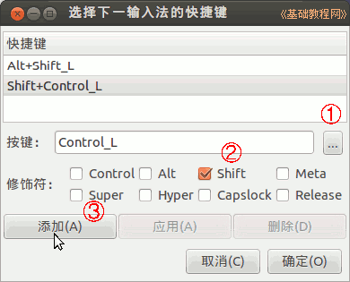

Ubuntu 入门操作指南
作者：TeliuTe 来源：基础教程网
十九、ibus 输入法 返回目录 下一课输入法图标在右上角，一个小键盘，常用的输入法有 fcitx、ibus 等，可以用拼音也可以用五笔输入；
1、ibus 输入法
1）更新完语言支持后，点击右上角小键盘，就会有一个“汉语-SunPinyin”输入法，图标是一个红色的“拼”；
2）打开一个文本编辑器输入窗口，按组合键 Ctrl+空格 调出中文输入法，输入拼音选择对应的汉字；
3）点击右上角小键盘，选择“首选项”，出来首选项面板；
4）点击中间的“下一输入法”右侧的省略号按钮，在出来的对话框中点省略号，按一下 Ctrl 键，再打勾选中 Shift 键，点左边的添加按钮，把切换输入法改成 Ctrl＋Shift；

5）还可以点中间的“候选词排列方向”，将候选窗口改成横条方向；
6）点上边的“输入法”标签，打勾“自定义活动输入法”，再点下边的“选择输入法”，选择右边的“拼音”或者五笔输入法，再点右边的“添加”就可以增加输入法；
7）最上边的是默认输入法，系统默认的输入法切换键是 Alt+Shift，中英文切换是左 Shift 键；
8）在第一个“常规”标签最下面，还可以自定义字体的大小，适当调大些；

本节学习了 ibus 输入法的基础知识，如果你成功地完成了练习，请继续学习下一课内容；
本教程由86团学校TeliuTe制作|著作权所有
基础教程网：http://teliute.org/
美丽的校园……
转载和引用本站内容，请保留版权信息和本站链接。